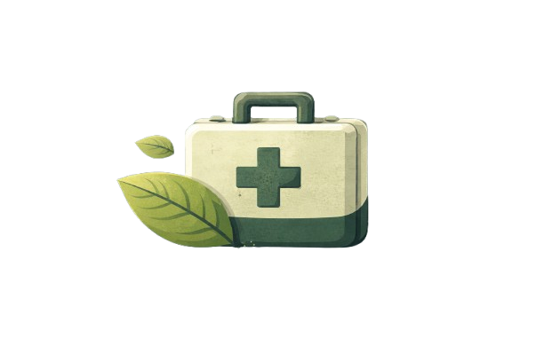

100% das pilhas contêm metais pesadosNa composição dessas pilhas são encontrados metais pesados como: cádmio, chumbo, mercúrio, que são extremamente perigosos à saúde humana. Dentre os males provocados pela contaminação com metais pesados está o câncer e mutações genéticas.
O descarte incorreto de pilhas e baterias em corpos d'água (rios, lagos, lençóis freáticos) representa um alto risco ambiental e para a saúde pública, devido à liberação de metais pesados tóxicos. Quando a cápsula da pilha é corroída pela água ou por deformações, substâncias como mercúrio, chumbo, cádmio e níquel são liberadas, contaminando o ecossistema de forma profunda e duradoura.
O descarte incorreto de pilhas e baterias representa sérios riscos à saúde humana e ambiental, pois contém metais pesados tóxicos como cádmio, chumbo e mercúrio. Ao vazarem, essas substâncias contaminam solo, água e alimentos, podendo causar câncer, doenças renais, distúrbios neurológicos, respiratórios e mutações genéticas.
(©) Projeto Acadêmico - João Vitor Rosera
Contribua para um futuro sustentável!